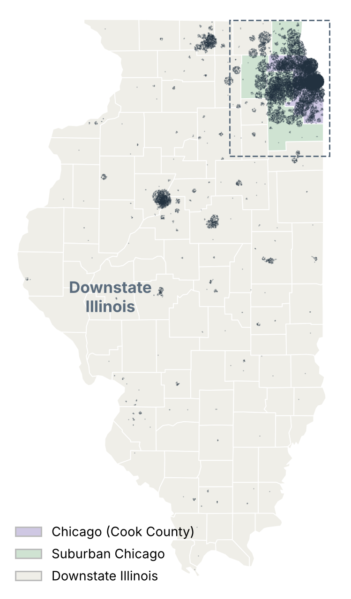
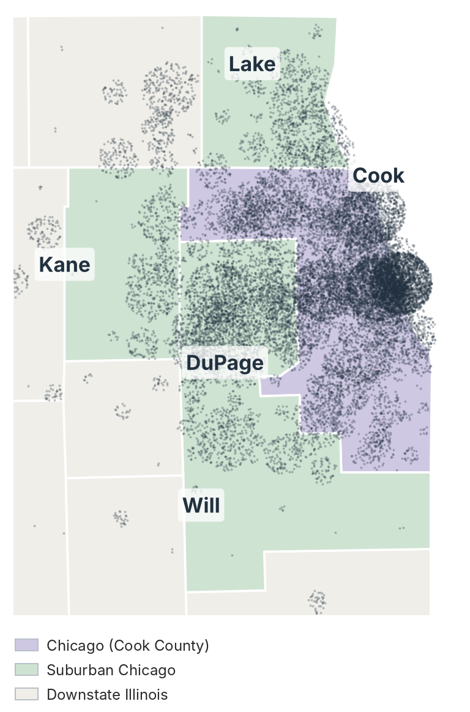
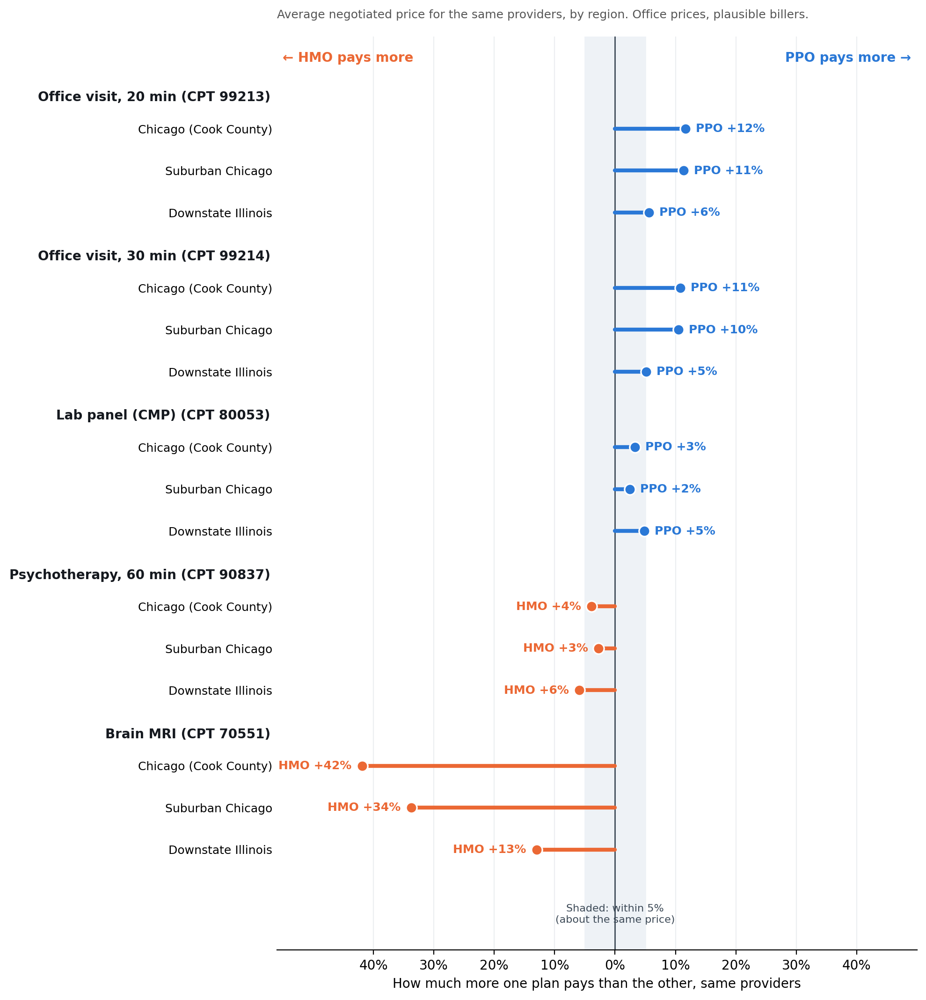
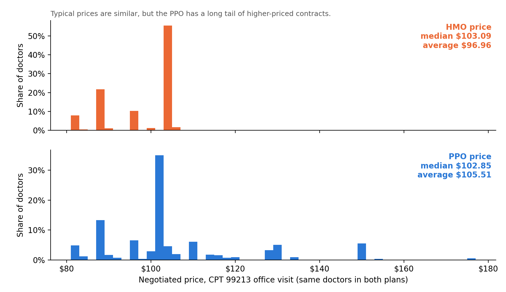
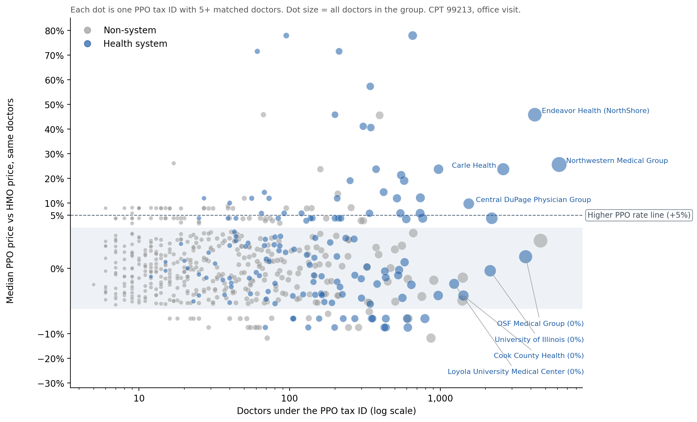
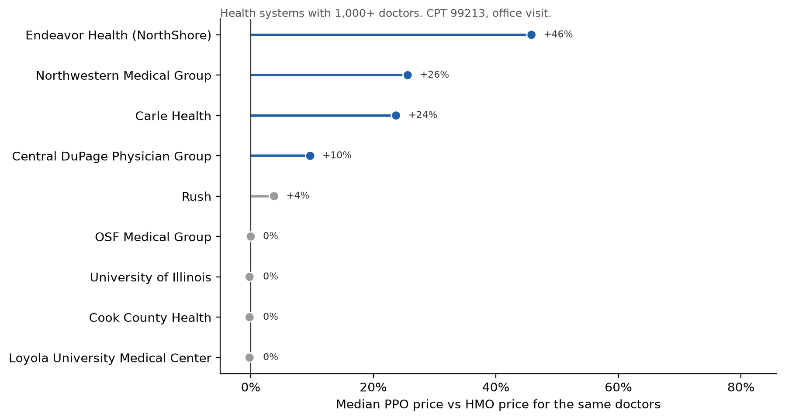
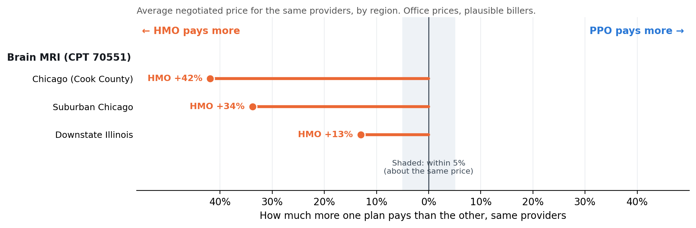
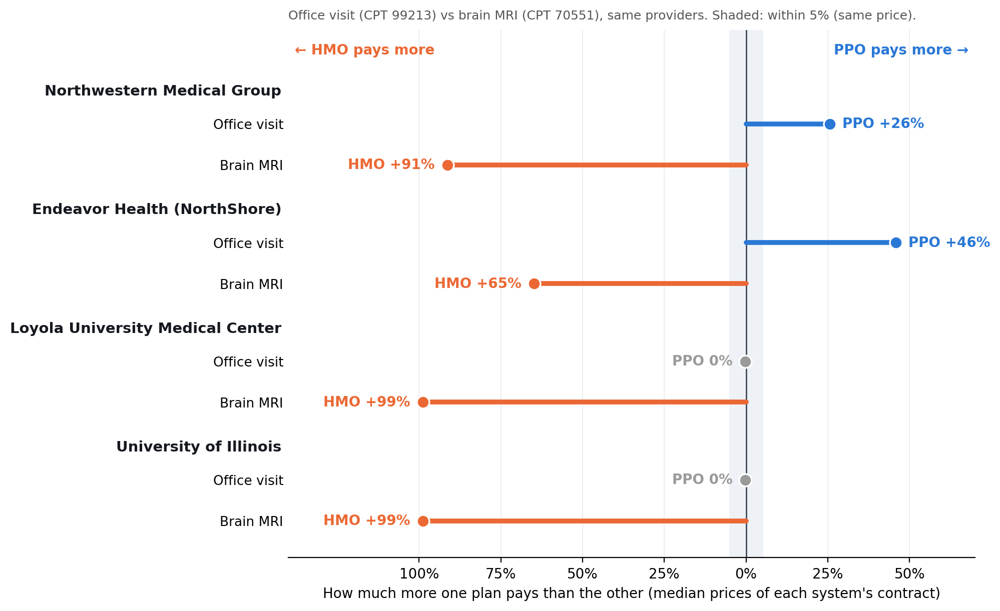

Same doctor, same visit
Two prices for one office visit
A routine office visit, CPT 99213, with the same Endeavor Health doctors, priced under two BCBS of Illinois plans.
The patient's copay is usually the same in both plans, so they never see the difference. Whoever pays the claim does: the insurer, or, for most workers with employer coverage, the employer. So why would an insurer agree to pay one doctor more just because the patient carries a PPO card?
How prices are set
Every price is a negotiation
Each negotiated price is the outcome of a bargain between an insurer and a provider, and each side brings its own leverage.
Brings volume
"Join our network and we'll send you our members, at a lower price." This works best in an HMO, where members must stay in network.
Brings must-have status
A PPO sells broad access, so it can't easily leave out well-known health systems. This works best for large systems with loyal patients.
The data
Comparing the same provider in both plans
Since 2022, federal Transparency in Coverage rules have required insurers to publish these negotiated prices. I matched every provider who is priced in both BCBS of Illinois's Blue Choice Preferred PPO and its HMOs (HMO Illinois and Blue Precision HMO), so the same provider can be compared in both plans.
When the PPO's rate for the same doctor and service is more than 5% above the HMO's, I count it as a higher PPO rate: the PPO pays more. Within 5% counts as the same price.


Where they practice
26,287providers are priced in both the PPO and an HMO. Each dot is one provider at their practice ZIP code.
are downstate, spread across Peoria, Springfield, Champaign, Rockford and smaller towns.
practice in Chicago and the rest of Cook County, and 7,114 in the suburban counties of DuPage, Kane, Lake and Will. Leverage looks different in each region.
The big picture
Which plan pays more depends on the service
Across five common services, neither plan is simply cheaper. For the same providers, the PPO pays more for office visits, the two plans pay about the same for a lab panel, and close to it for therapy, and the HMO pays more for brain MRIs.

So the better question isn't "which plan is cheaper?" It's who has leverage over which prices.
One service, like for like
The leverage charts that follow use one routine office visit, CPT 99213. Nearly every doctor bills it, so it gives the largest same-doctor comparison: 17,451 doctors priced in both plans.
The insurer's leverage
The HMO pays a standard rate
Every price paid to the same doctors for one office visit, CPT 99213. In the HMO, prices cluster on a handful of standard amounts, like a rate card. In the PPO, they spread out.

What the chart shows
55%of these doctors get exactly the same HMO price, $103.09.
are paid more than $110 in the PPO. In the HMO, none are.
The typical price is similar in both plans; the higher PPO rates live in the long tail. So who is in the tail?
The provider's leverage
Higher PPO rates concentrate in the largest health systems
If leverage drives higher PPO rates, they should become more common as groups get bigger. They do, but only for health systems. Large groups that aren't part of a system, such as therapy platforms and anesthesia groups, almost never get them.
of doctors in health systems with more than 1,000 doctors get a higher PPO rate, compared with 4% in non-system groups of the same size.
Look closer: each billing group's PPO vs HMO rate for an office visit (CPT 99213)

Contract by contract
Some systems get a higher PPO rate. Others, just as large, don't
Prices are set one contract at a time. Among the nine largest health systems, Endeavor's medical group gets 46% more in the PPO, Northwestern's 26% and Carle's 24%. Just as large, OSF, the University of Illinois, Cook County Health and Loyola take about the same price in both plans.

Twist
Size isn't everything
Three of the state's largest systems are paid the standard rate in both plans.
Even inside one health system family, contracts differ
All three belong to Endeavor Health, formed when NorthShore and Edward-Elmhurst merged in 2022 (renamed Endeavor in 2023). Each bills under its own tax ID, so each has its own contract. Leverage depends on more than size: contract strategy, HMO participation and local competition, none of which these files measure.
Where leverage concentrates
Higher PPO rates are most common in the Chicago suburbs
In the suburban counties, 88% of doctors in large systems get a higher PPO rate. In Chicago it's 60%, and downstate 37%, much closer to everyone else. Non-system doctors stay low in every region. Downstate also has the smallest office-visit gap between the plans, about 6%.
Second twist
For brain MRIs, it flips
For a brain MRI without contrast, CPT 70551, the HMO pays the same providers more than the PPO does: 42% more in Chicago, 34% in the suburbs and 13% downstate.
But the HMO isn't paying up. It keeps its standard rate: $499.52 for three out of four MRI contracts, just like its office-visit rate card. The gap comes from the PPO paying large contracts much less, as low as $251.

Look closer: same systems, opposite direction for an office visit vs a brain MRI

higher in the HMO, depending on region, because the PPO pays large contracts less.
Contracts are negotiated as a package. A system may get more for office visits and give more on imaging, where imaging centers compete with each other. The files don't show the negotiations, so this is a hypothesis.
Limits
What this data can't show
The files show negotiated prices for each doctor and service. They don't show everything that goes into a bargain, or what anyone actually spends.
These are doctors' prices in an office setting. When a visit happens in a hospital-owned clinic, the hospital can add its own facility fee. Those aren't compared here, because the HMOs price hospitals as a percent of billed charges, not in dollars.
A contract covers many services at once, and can include terms the files leave out, such as contract length, quality bonuses or which plans a system joins. A higher rate on one service may be traded for a lower one elsewhere.
Contracts are signed at different times. A group that joined a larger system, like Edward and Elmhurst within Endeavor, may still be on an older contract.
The files don't show how often visits or scans happen, so they can't say what any price gap costs in total.
Some hospital-based radiology groups may bill only the radiologist's reading, not the whole scan, which would make their MRI prices look low.
This is BCBS of Illinois in September 2026. Other insurers and later files may differ. HMO groups paid a fixed amount per member have no dollar prices and are left out.
Leverage itself isn't measured. These patterns are consistent with bargaining power, not proof of it.
What it means
Price transparency shows who holds the leverage
What an insurer can do with this
Benchmark
Flag PPO contracts paid well above the HMO's standard rate, starting with the systems paid 26% to 46% more for an office visit.
Negotiate the bundle
The PPO already pays large systems less for an MRI. Negotiate services together, not one line at a time.
Learn from the exceptions
OSF, the University of Illinois and Loyola take the standard rate. Size alone doesn't guarantee a higher rate.
The same files are useful beyond insurers
Employerscompare plans for the services their employees use.
Health systemscompare their rates with peer systems.
Patientscheck the negotiated price before a visit.
Methods
- Prices: BCBS of Illinois Transparency in Coverage in-network rate files (September 2026) for Blue Choice Preferred PPO, HMO Illinois and Blue Precision HMO.
- Matching: the same provider (NPI) with a dollar price for the same service and setting in both the PPO and an HMO. Professional (doctor) prices only.
- Higher PPO rate (the PPO pays more): the PPO's negotiated rate is more than 5% above the HMO's for the same doctor and service. This is a price per visit, not the monthly premium members pay.
- Group size: doctors listed under the PPO tax ID. Health systems identified by organization names plus hand review.
- System families: the price files list each tax ID separately and don't say which ones share a parent. The Endeavor Health grouping (NorthShore, Edward, Elmhurst) comes from public merger news, not the data: Endeavor Health press release.
- Plausible billers: provider types who would normally bill the service (NUCC taxonomy), to screen out contracted prices that are rarely used.
- Location: practice ZIP from the NPPES registry, mapped to counties (Census ZCTA file) and to CMS Medicare payment localities.
- Tools: Python (pandas, NumPy, matplotlib) in Jupyter.
Checks and credits
- How I checked the findings
- How I used AI
- Independent analysis: prices come from BCBS of Illinois's public price transparency files (September 2026). This is an independent student analysis, not affiliated with or endorsed by BCBS of Illinois or any health system named.
About the author
Lana McKinnon
M.S. in Business Analytics and AI student at the University of Illinois Urbana-Champaign, with a background in biomedical visualization and fine arts. I turn messy public data into clear stories for business decisions.